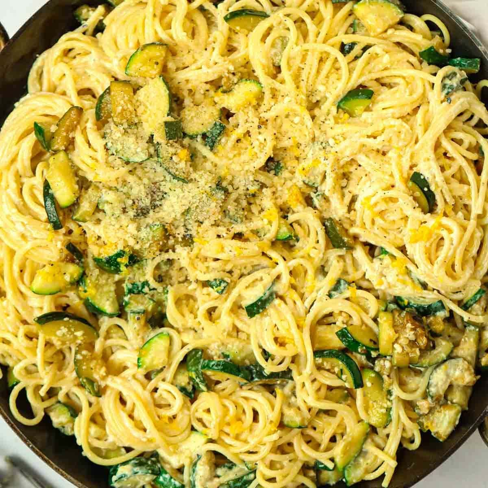

This is my version of Gabe's slow-cooked courgette pasta. It’s so easy to make but being patient when cooking your courgettes is the key.
Ingredients required
- 3 Cloves of Garlic
- Bunch of Mint
- 6 Courgettes
- 400g Spaghetti
- 80g Pecorino
- 1 Lemon
- Salt
- Pepper
- Olive Oil
Steps
- Finely slice your garlic. Chop your courgettes into ½ cm thick rounds.
- Heat a large sauté pan over a medium heat. Add a generous glug of olive oil, then tip in your garlic. Cook for 1 min until fragrant.
- Add all of your courgettes to the pan and give them a good mix so that they are all coated in the oil, and no garlic sticks to the base of the pan.
- Cook over a very low heat for an hour and a half, stirring occasionally to prevent them from sticking. Don’t worry if your courgettes break down and lose their shape - this is the point!
- Bring a large pan of salted water to a boil. Add your spaghetti and cook until al dente.
- Grate your pecorino into a bowl, then add a ladle of pasta water. Mix to combine.
- Roughly chop your mint.
- Add your spaghetti to your courgettes, along with your mint, pecorino mix and another splash of pasta water. Give it a really good mix with tongs to combine. Zest in your lemon and add the juice, then season the whole mix to taste with salt and plenty of black pepper.
- Tong onto plates, then top with a little more pecorino. Serve and enjoy!